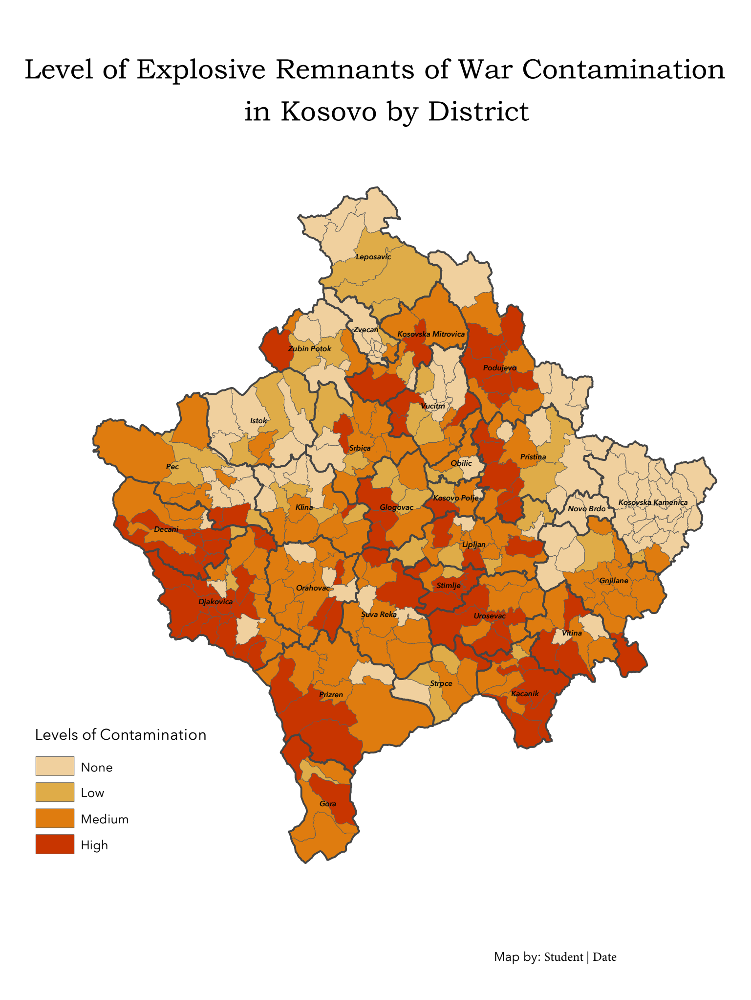

Preamble
In this seventh technical lab, we will complete any remaining steps of Monday’s demonstration lab then turn to steps necessary for the seventh assignment. These lab steps should be used extensively to aid with the completion of the sixth assignment due Sunday evening at 11:59pm.
Data
Location of Class 7 KosovaERW.gdb for download
To begin the assignment, download and access the following .gdb. Create a new assignment .mxd and connect ArcCatalog to the .gdb:
.gdb structureNote the local, projected coordinate system and its unit of measurement that will be used throughout the assignment. It is critical that all features used is a geoprocessing framework partake of the same coordinate system to avoid any processing errors.
Assignment Step 1
Input districts, cluster bombs and land mines into the project .mxd.
Create an Unique, Global ID, aka GUID field within districts. This results in a unique ID per district polygon feature which will be used later in the assignment to uniquely identify all the Kosovo districts.
The term GUID stands for Globally Unique Identifier and it is used interchangeably with UNIQUEIDENTIFIER.
Assignment Step 2
Create BUFFERS:
UXOLandmineSites Buffer = 100 meters
ClusterBombs Buffer = 500 meters
Save all resulting buffer features in the assignment folder outside the .gdb. Create and Name a folder exports in which you save your geoprocessing results throughout the assignment.
Assignment Step 3
Enact UNION:
UNION ClusterBombSites Buffer + UXOLandmineSites Buffer

11434 separate polygonsAssignment Step 4
Enact DISSOLVE:
The UNION can be fully dissolved into one polygon feature through several avenues within ArcGIS. One foolproof approach is to make a new field entitled dissolve_C (dissolve calculation) and populate it with the field calculator with a simple number, in this case 1.
Create a field dissolve_c (dissolve calculation), type Short Integer:
dissolve_cNext, populate with value 1 via Field Calculator. Once complete, open the Dissolve toolset and dissolve via the dissolve_c column:
Assignment Step 5
Enact ClIPPING:
At this juncture, the ERW area has been determined and dissolved into just one feature, but there is no way to determine where ERW starts and stops within a particular district(s). To accomplish this task, a Clip will be utilized with districts as the clipping feature, and dissolved ERW buffer area as the feature to be clipped.
There appears to be a mistake in the ordering of the CLIPPING tool in ArcGIS 8.x. Note that the ‘input’ feature is the ERW and the ‘clip’ feature is the districts. However, the tool seems to take the opposite order for the a valid clipping process output.
At this juncture, there will be 236 districts that contain as least some EWR area. You will handle those district that contain NO EWR upcoming.
Assignment Step 6
Add GEOMETRY
Within the clipped result, calculate geometry for the area within the districts that is contaminated.
ERW_AREA as type DoubleAssignment Step 7
Derive % of contamination per district:
As a result of Step #6 above, both AREA for districts as well as AREA for contaminated sq. area (meters) now exists in the attribute table for contaminated districts - the result of the Clip geoprocessing. The following steps will create a normalized column for % of each district that is contaminated. This is needed to know the relative levels of contamination across all districts in Kosovo.
Use the following expression for % contaminated:
([ERW_AREA]/ [AREA])*100
Use Add field to create a new column that will house % contaminated. Name the field/column PCT_CNTM
PCT_CNTM field, type DoubleAssignment Step 8
Determine ordinal classification ‘level of contamination’ within the 236 records ‘Clip’ layer from Step #7.
While normalized % contamination now exists in the table, an ordinal category of ‘level of contamination’ is a more effective approach for priority mapping. In this step both thresholds and a range will be used to develop levels based on the following criteria:
| Level Description | Definition |
|---|---|
| None | 0 percent, i.e. NULL |
| Low | <1.3 percent (up to the median value of contamination) |
| Medium | 1.3-6.5 (between one and five times the median value of contamination) |
| High | >6.5 percent (more than five times the median value of contamination) |
To start, create a column entitled LVL_CONTM via Add field, text type with a default length of 50. This will be the column for Level Descriptions.
Next Select by Attributes the first condition for the LOW value:
"PCT_CNTM"<1.3
Next assign the text ordinal value “LOW” to the LVL_CONTM column. Once complete, clear all active selections.
At this juncture you have made 1 of a total 4 assignments based on a selection condition. Its imperative to fully clear selections immediately following a separate selection and assignment. If you do not clear your selections, you run the risk of ‘assigning values atop already assigned values’, i.e. assigning two times over.
Next Select by Attributes the second condition for the MEDIUM value:
"PCT_CMTM" >=1.3 AND "PCT_CMTM" <=6.5
Once selected, apply “MEDIUM” to the LVL_CONTM column, and then clear selections.
Next Select by Attributes the third condition for the HIGH value:
"PCT_CMTM">6.5
Once selected, apply “HIGH” to the LVL_CONTM column, and then clear selections.
Assignment Step 10
With the 236 records in the ‘clip’ layer assigned “HIGH”, “MEDIUM” and “LOW” ordinal values, the geometry is now useless to the mapping. In this case, you can export the attribute table with IS critical to the thematic mapping.
Export this result as a table into the project exports folder; you do not need the geometry, just the attribute data:
erw_table.dbfPlace the resulting erw_table.dbf into the project TOC.
Join the contamination ranks table to original district feature in preparation for final thematic mapping. Utilize the Table Join function to do this step. The Global ID will be used as the join column.
GlobalID columnOnce the join is complete, export this fully joined feature to the exports folder as district_erw_joined and return this feature to the project TOC. Open this newly joined feature attribute table and note 91 remaining NULL records; these are the records that contain NO ERW:
Select these NULL values interactively in the table by Sort Ascending on the LVL_CONTM column so that they are located towards the top of the table. You can then select these 91 records ‘by hand’ via far left in column, shift>right-click.
Once these NULL values are selected, assign “NONE” value to LVL_CONTM:
NONEAssignment Step 11
With all assignments complete, including the “NONE” assignment, export the results to a new feature district_erw_joined.shp:
district_erw_joined.shpNext, thematically map ‘Level of ERW Contamination’:
Utilize the LVLCONTM column as input into ordinal categories for thematic mapping. Design your classes so that those districts with high contamination appear dense relative to medium and low classes. Make sure to visually segment the districts that have no contamination (NULL) separate from the classes that do indeed have some level of contamination as its especially important to separate none from low.
LVL_CNTMLVL_CNTM- Refer to Map Layout & Deliverable below for other cartographic details.
Map layout & Deliverable:
To development the final map design, utilize the map example PDF below to help guide your process.
Final map layout will include the following elements on either a 11x17” or 8.5x11” Portrait 300 DPI:
- Main map frame featuring your cartographic output with thematic design
- A map title
- Legend representing each ordinal value for level of contamination
- Data source & Author tag

Example Layout - Assignment 7 Utilize the following map examples to guide your design process:
Resources:
Mine Action Clearance, Kosovo - 2022